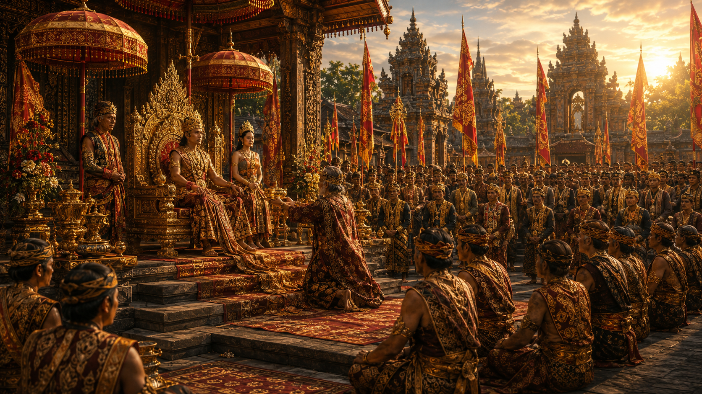
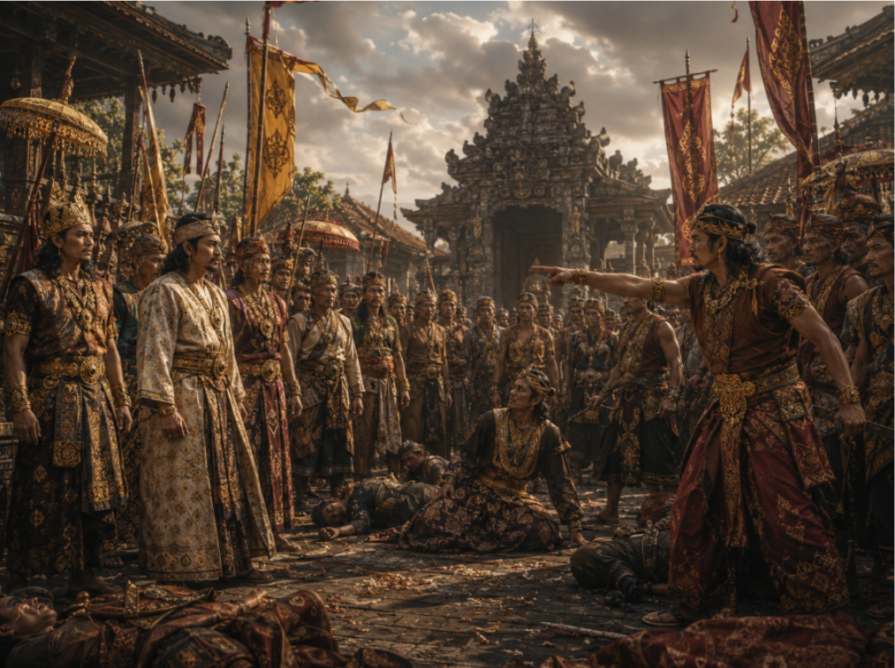
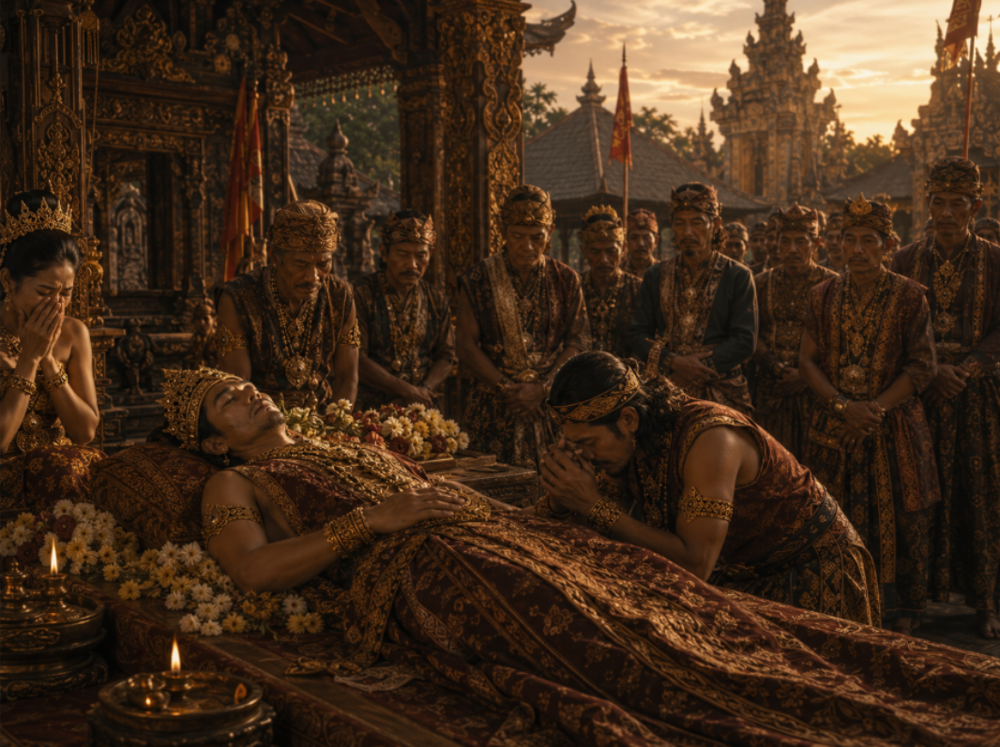
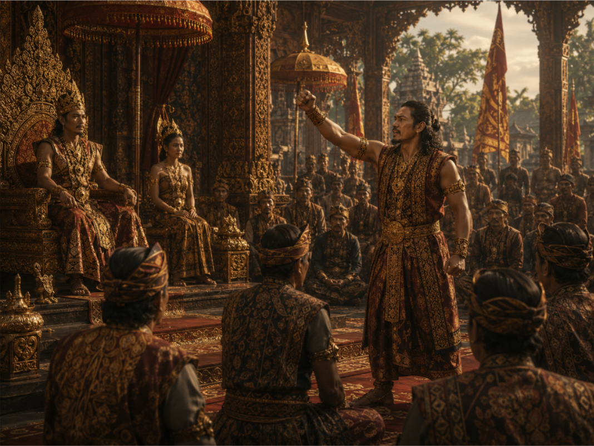
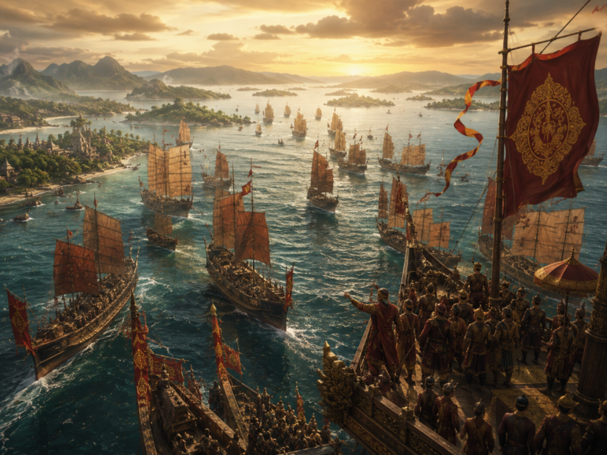
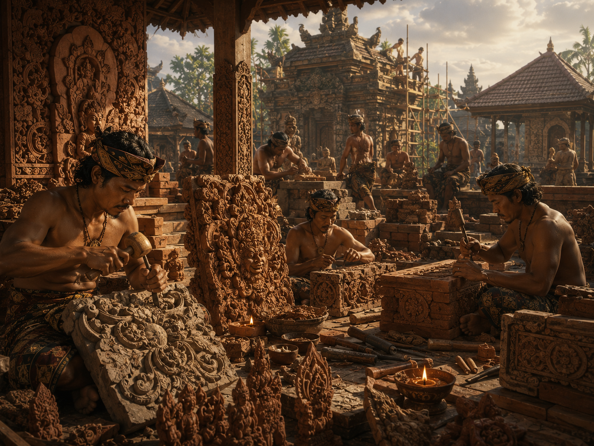
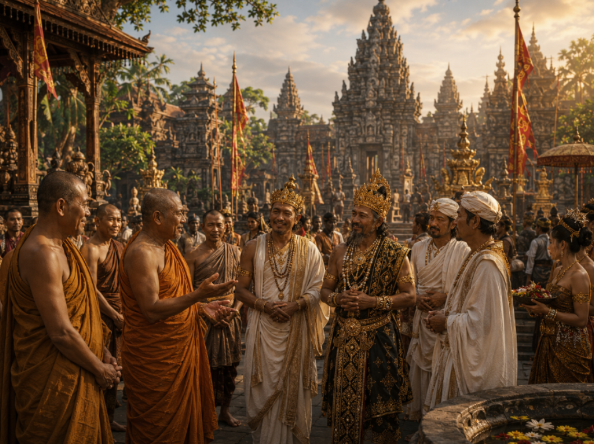
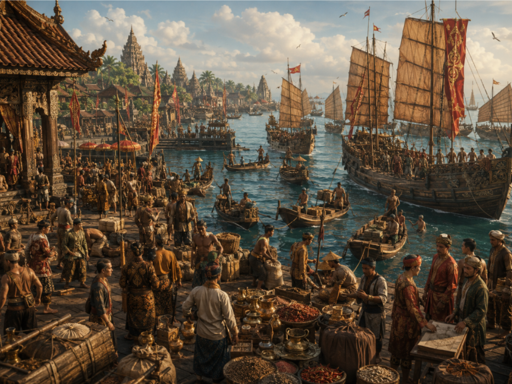

⚡ Dampak Sejarah

Lahirnya sang pangeran yang kelak membawa Majapahit menjadi kerajaan terbesar di Nusantara.

Insiden di Bubat merenggangkan hubungan Majapahit dengan Kerajaan Sunda dan meninggalkan luka sejarah.
Kitab agung yang menjadi sumber sejarah utama dan bukti kejayaan peradaban Majapahit.

Kepergian sang raja menandai berakhirnya era kejayaan Majapahit yang gemilang selama hampir empat dekade.

Maha patih Gajah Mada bersumpah tidak akan menikmati palapa sebelum Nusantara bersatu di bawah Majapahit.

Di bawah Hayam Wuruk dan Gajah Mada, pengaruh Majapahit meluas hingga mencakup hampir seluruh kepulauan Nusantara.


